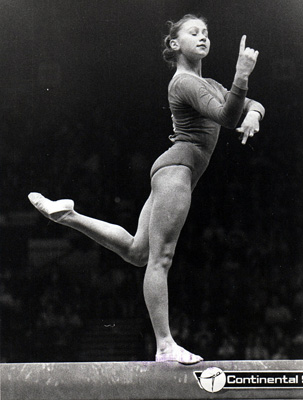

Ludmila Savina (USSR)

1975 Champions All AA Silver Medalist
Ludmila trained in Minsk at Trudovie Reservi. Her coach was Lyubov Miromanova. She's married to Vyacheslav Boiko, who's the assistant coach for the Penn State men's gymnastics team.
Competition Results
1972
BLR-POL Dual Meet: 1st Team, 1st AA
Jr. Friendship Tournament (Druzhba): 1st Team, 6th AA, 2nd UB, 3rd B
Jr. USSR Championships: 4th AA, 2nd UB
Jr. USSR-HUN Dual Meet: 1st Team, 3rd AA
1973
Jr. Friendship Tournament: 1st Team, 6th AA, 8th V
Jr. USSR Championships: 1st AA, 1st FX
USSR Cup: 3rd AA, 1st UB, 3rd B
1974
Riga International: 3rd AA, 3rd B, 3rd FX
Spartakiade of the Belarussian Republic: 2nd AA
1975
Champions All: 2nd AA
USSR Championships: 1st Team, 4th UB
USSR Cup: 3rd AA
USSR-PRK Dual Meet: 1st Team, 1st AA
This page was created on January
04, 2006 and was last updated on March 25, 2026.
© Gymn Forum